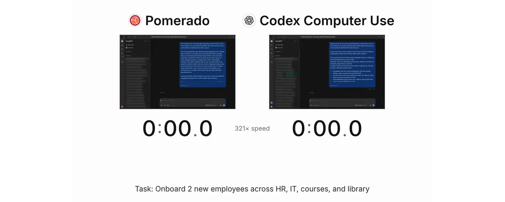
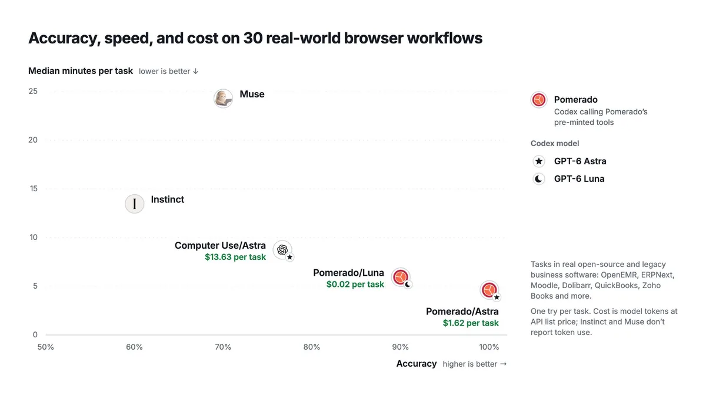
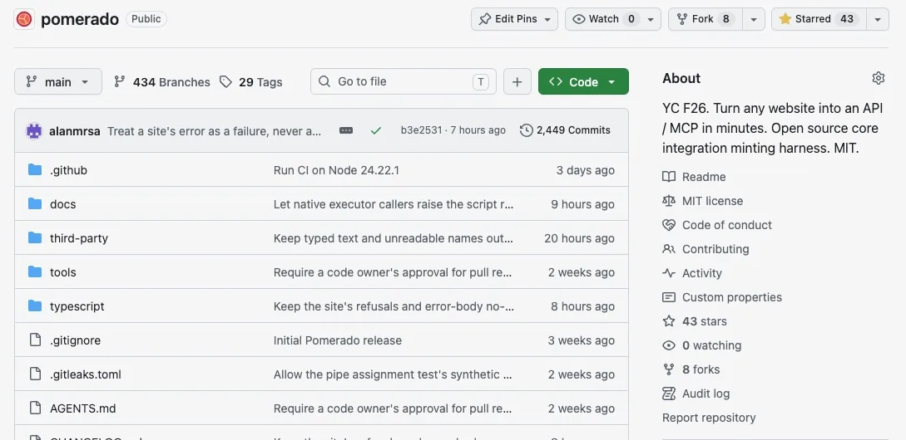

仓库数据取自公开 GitHub 仓库页，时间 2026-10-27 15:58（UTC+8）；最新提交 848fcda（2026-10-27 15:03 UTC+8）。发布推文时作者截图里仓库只有 43 星，两天内涨到一千出头。

原帖：作者发布推文串全文中译
作者 Akshay（@akshay_manglik），Pomerado 创始人，此前在 Scale AI 做应用 AI。推文串发于 2026-10-26 03:14（UTC+8），共 9 条加 2 条链接回复。主帖截至 2026-10-27 15:56（UTC+8）：约 44.4 万浏览、3,793 赞、4,965 收藏、193 转发、254 回复、91 引用。以下按顺序全文翻译。
1/ 隆重介绍 Pomerado（YC F26）：比浏览器操作（browser use）更快、更便宜、更可靠的替代方案。
开源。免费注册，给你的智能体加满马力 🧵 ［附发布视频］
2/ 计算机操作（computer use）又慢、又贵、又不可靠。但要让智能体在网上执行操作，它是唯一的办法：大多数网站没有公开 API，而且你还得登录。
3/ 所以我们做了 Pomerado：一个能在 30 分钟内把任何网站变成 API / MCP 的平台。
我们的 API 比浏览器智能体更快（2–4 倍）、更便宜（10–1000 倍）、更可靠（+30%），对比对象包括 Astra、Muse 和 Instinct。［附基准图］
4/ Pomerado 的原理是：根据用户的提示词，即时构建一个确定性的 API。我们的智能体会扫描网站，把任务翻译成 HTTP 调用或 Playwright 脚本。
5/ 这些 API 能自我修复：它们会自动检测网站的变化并修好自己，全程不需要人参与。你的请求总能拿到响应。
6/ Pomerado 适用于任何网站。可以用它让个人助理更擅长处理网页任务；也可以把智能体接入 ERP、CRM、电子病历（EHR）、保险门户等系统。
7/ Pomerado 是为云端智能体打造的。托管、扩容和身份验证都由我们负责，包括安全的凭据存储和自动两步验证（2FA）。智能体永远看不到密钥。
8/ 我们是开源的，采用 MIT 许可：用我们的仓库，你可以自己搭建本地托管的 API。［附仓库截图］
9/ 免费注册：pomerado.ai
10/ 看看我们的开源代码：github.com/Pomerado/pomerado


作者在评论区的补充（节译）
用 conversation_id 检索到作者在该对话中约 60 条回复，大多是致谢。下面挑出有信息量的几条，全文翻译。
- 和 browser use 的区别（回复 @sabir_huss50540）：“浏览器操作需要点开、截图每一页，再让模型对截图推理。Pomerado 则只用一次智能体来构建一个确定性的 API；执行时没有模型参与，所以速度快 2 倍、成本低 10–1000 倍、可靠性高 30% 以上。”
- 登录与 2FA（回复 @LiquidBuiltIt）：“可以——每次请求时传入登录信息，或者把它安全地存进我们的保管库，以便无缝使用。我们也能处理两步验证。”后续又补充：“TOTP 可以存在我们这里，我们会自动填验证码；短信验证码则需要你自己输入，想闭环的话 Mac 的 Messages MCP 挺好用。我们有可绑定的专用手机号来收短信 2FA，但因为成本原因只给企业用户。”
- 反爬与站点覆盖（回复 @keyserfaty 等）：“我们有一整套隐身（stealth）技术栈，能访问绝大多数网站，包括面向消费者的电商。哪个网站不行，联系我们，会尽快处理。”另一条：“我们有定制的隐身栈和自研的验证码破解器……”“隐身栈只在云端提供。”
- 限制：“LinkedIn 目前不支持——它封号很狠，我们先把它隔离出去”；“还不支持桌面应用，在路线图上”；“完整结账（比如支付集成）暂不支持，在路线图上；目前可以用账户里已保存的支付方式”；“目前用户不能接管浏览器；如果需要用户额外输入，可以直接通过 MCP 回答，或者在网页上的安全输入框里填写。目标是不让人在回路（HITL）变成拐杖。”
- 地区（回复 @BharadwajaSimh1）：“总体来说非美国网站更难。免费档的浏览器来自美国 IP，可能显得异常。我们正在修，没想到有这么多国际用户！”
- 适用场景（回复 @Vian_hrtm）：“我们的目标是让 API 的创建尽可能快！Pomerado 目前最适合重复性的工作流——你需要用到 3 次以上的那种。也可以并行创建多个 API。”
- 自修复里的权限扩张（回复 @geclos）：“这类改动在修复流程中会有自动审查。多数情况下会被拒绝；如果根据上下文确实有理由扩大权限，它会请用户明确确认。我们还在摸索最佳做法。”
项目导读
它在解决什么问题
让智能体在网页上“办事”，现在主要有两条路。一是网站有 API，就直接调用；二是没有 API，就让智能体像人一样看屏幕、点按钮（computer use / browser use）。第二条路通用，但每一步都要截图、让模型推理，所以慢、贵，而且同样的任务每次结果都可能不一样。Pomerado 的思路是把“理解网站”这件昂贵的事只做一次：先由智能体把任务做成一段确定性代码并发布成 MCP 工具，此后每次调用都是普通的代码执行，不再请求模型。这和 Pomerado 自己说的“重复 3 次以上的工作流最划算”一致：只做一次的任务，铸造成本摊不薄。
工作流：探索 → 完成你的示例 → 泛化 → 智能体调用
- 铸造（mint）：在 MCP 客户端（Claude Code、Codex、Cursor 等）里对智能体说“用 Pomerado 给某网站做一个叫 xxx 的集成，只读”。客户端调用
mint，拿到一个任务 ID，再用get_job轮询进度，用provide_input回答 Pomerado 的提问（登录、验证码、选择），需要时用cancel_job取消。每次铸造最多 20 分钟的有效工作时间，等你回答的时间不算。 - 铸造器（minter）：一个带本地工作区和真实 Chromium（原生 Playwright 驱动）的模型智能体。它阅读网站，在
src/下写操作模块，并在真实网站上跑这些模块来验证。对于只读任务，它还会根据网页上看到的内容自己设计test/cases.json实测用例，通过率至少 70% 才能进入发布审查。 - Guardian：第二个模型，在每次浏览器调用执行之前审查，向你提问之前也审查，成品源码保存之前再审一次；被拒绝的调用不会碰到网站。它的策略改编自 OpenAI Codex（Apache-2.0）。另有一个“结果审查器”在事后判断每一次写操作是否真的改动了网站（done / not_done / unknown）。
- 权限（authority）：铸造时必须选
read或write，工具会让智能体在选write前先问你。写操作在构建时会真的执行一次，之后只审查源码，不再重复执行。登录只会填进目标站点或你在authenticationOrigins里列出的登录域，表单字段或提交目标指向别的网站会被直接拒绝（credential_target_refused）。 - 产物：一个归你所有的源码目录：
src/、pomerado.json（入口与输入输出 JSON Schema）、deployment.json、mcp.mjs等。每个集成都是一个独立的 MCP stdio 服务器，只暴露一个以集成命名的工具。运行时先按 schema 校验输入，执行不请求模型，也就不需要模型密钥。 - 运行时细节：每次调用都从站点根路径开始，开一个全新的浏览器上下文（无 cookie）。需要登录的集成每次调用都重新登录，并且不保存任何凭据。失败时返回
possible_commit等字段，提醒调用方先把网站状态读回来，再决定是否重试，避免重复下单这类事故。
开源核心 vs. Pomerado Cloud
开源仓库就是完整的核心：铸造器、铸造框架与提示词、Guardian、本地 MCP 宿主，以及集成本身，不需要账号。不过铸造用的是 OpenAI 模型（代码里写死在 models.ts：铸造用 gpt-6.1-sol，Guardian 用 gpt-6-luna），需要你自己的 OPENAI_API_KEY；你的智能体本身可以用任何模型。Cloud 版在同一核心上增加了：托管、OAuth 代理与已保存登录、访问控制、能应对反爬的托管浏览器集群，以及网站改版检测与自动修复。注意推文里的“自我修复”“自动 2FA”“隐身栈”都是 Cloud 功能，开源版没有。
怎么看那张基准图
- 测的是 30 个跑在开源和老旧业务软件上的真实工作流（OpenEMR、ERPNext、Moodle、Dolibarr 等），每个任务只试一次。这类后台系统表单多、结构稳定，正是“铸造成确定性代码”最占优势的场景。
- “Pomerado”这一栏是“Codex 调用预先铸造好的工具”，图上的耗时和成本看起来不包括铸造本身的时间（推文说 30 分钟内）和 token。只用一次的话，这个对比并不公平。
- Instinct、Muse 不报告 token 用量，所以没有成本数字；基准为厂商自测，作者在评论区说“完整基准稍后发布”。推文里的“快 2–4 倍”“+30%”与评论区的“快 2 倍”口径不完全一致。
局限与注意事项
- 合规风险：Cloud 的“隐身栈 + 自研验证码破解器”意在绕过网站的反机器人措施，可能违反目标网站的服务条款；LinkedIn 被主动排除，也说明了这一点。用于自家系统或明确授权的站点更稳妥。
- 凭据：托管版要把登录信息、TOTP 种子交给第三方保管；推文强调“智能体看不到密钥”，但信任边界转移到了 Pomerado 本身。开源版运行时不保存凭据，每次都向你要。
- 依赖与平台：只支持 macOS / Linux 和 Node 24.21+；铸造依赖 OpenAI API；还不支持桌面应用、完整结账，也不能让用户接管浏览器；免费档用美国 IP，非美国网站更容易被拦。
- 许可变更：0.1.2 及更早版本是 AGPL-3.0-only，之后改为 MIT。Guardian 策略和可访问名称计算分别改编自 OpenAI Codex 和 Playwright（Apache-2.0），保留各自的许可。
- 项目非常新、变化快：仓库有 434 个分支，CHANGELOG 接近 1,300 行，大量是破坏性变更；README 的写作风格偏向写给智能体看的精确规范（
docs/how-it-works.md约 2.4 万词）。
小结
Pomerado 把“智能体每次都现场看网页”换成“智能体铸造一次、代码重复执行”，并用 Guardian 事前审查、读写权限、登录域白名单和“可能已提交”提示，把写操作的风险控制在可审计的范围内。对重复性高、站点结构稳定的后台流程（ERP、CRM、病历、保险门户），这是比 computer use 更工程化的路线；一次性任务、强反爬站点和需要人随时接管的场景，它还不擅长。想了解多智能体系统里的身份、授权与沙箱问题，可对照阅读 Katelyn Lesse 那篇；想了解“让智能体交出证据”的工作方式，可读 Thorsten Ball 那篇；评审与回滚的工程化思路可参考 Claude Code 团队怎么做代码评审。
附录：README 全文中译（MIT）
译自 README.md @ 848fcda，Copyright (c) 2026 Pomerado AI, Inc.，MIT 许可。命令、代码与文件名保持原样，徽章与 Star History 图未转载，相对链接已改为指向 GitHub。
Pomerado
把网站变成你的智能体可以依赖的 MCP 集成。
工作原理 · 开始使用 · 创建集成 · 使用集成 · 开源与 Cloud · 文档 · Discord · 贡献
Pomerado 能做什么
Pomerado 为网站构建 MCP 集成，包括没有 API 的网站。
- 我们的工具只需要一段对任务的自然语言描述就能构建集成，不需要 HAR 文件或录制
- 集成是确定性的，因此比计算机操作（computer use）快得多，也可靠得多
- Pomerado 能用在需要登录和两步验证的网站上
工作原理
┌──────────────────────────────────────────────────────────────────────────┐
│ 探索网站 → 完成你的示例 → 泛化 → 智能体调用它 │
└──────────────────────────────────────────────────────────────────────────┘
更多细节见 How it works。
开始使用
前置条件
- macOS 或 Linux
- Node 24.21 或更新的 Node 24 版本，可以用
node --version检查 - 一个 OpenAI API 密钥，因为 Pomerado 用 OpenAI 模型来构建和审查集成。你的智能体可以运行在任何模型上
- 一个能运行本地服务器的 MCP 客户端，例如 Claude Code、Codex、Cursor、VS Code、Claude Desktop 或 Gemini CLI
安装 Pomerado 及其驱动的 Chromium 构建。
npx -y -p pomerado pomerado-mcp --help
npx -y -p pomerado playwright install chromium
在 Linux 上，如果缺少 Chromium 的系统库，在 install 后面加上 --with-deps。
Pomerado 以标准 MCP stdio 服务器的方式运行。读取 mcpServers 文件的客户端使用下面这个条目。
{
"mcpServers": {
"pomerado": {
"command": "npx",
"args": ["-y", "-p", "pomerado", "pomerado-mcp", "mint", "--root", "/absolute/path/to/pomerado-integrations"]
}
}
}
--root设置 Pomerado 保存你的集成的文件夹。请使用绝对路径，因为每个客户端都会从自己的工作目录启动服务器- 服务器从环境变量中读取
OPENAI_API_KEY，所以密钥永远不需要出现在聊天里 - 启动服务器、列出它的工具不花任何钱。在你开始一次铸造（mint）之前，它不会启动浏览器，也不会调用模型
用下面的命令或文件把 Pomerado 加到你的客户端。
| 客户端 | 添加 Pomerado |
|---|---|
| Claude Code | claude mcp add --scope user pomerado -- npx -y -p pomerado pomerado-mcp mint --root ~/pomerado-integrations |
| Codex | codex mcp add pomerado -- npx -y -p pomerado pomerado-mcp mint --root ~/pomerado-integrations，然后添加 env_vars |
| Gemini CLI | gemini mcp add -s user -e 'OPENAI_API_KEY=$OPENAI_API_KEY' pomerado npx -y -p pomerado pomerado-mcp mint --root ~/pomerado-integrations |
| Cursor | 把条目加到 ~/.cursor/mcp.json |
| VS Code | code --add-mcp '{"name":"pomerado","command":"npx","args":["-y","-p","pomerado","pomerado-mcp","mint","--root","/absolute/path/to/pomerado-integrations"]}'，或者把条目加到工作区的 .mcp.json |
| Claude Desktop | 把条目加到 claude_desktop_config.json |
每个客户端传递环境变量的方式各不相同。客户端设置涵盖了上面每个客户端的密钥和超时设置。
要确认安装成功，问问你的智能体它有哪些 Pomerado 工具。它应该列出 mint、get_job、provide_input 和 cancel_job。
让你的智能体来安装
如果你不想自己执行这些步骤，把下面这段粘贴给你的智能体。
Set up Pomerado for me by following https://raw.githubusercontent.com/Pomerado/pomerado/main/docs/agent-setup.md
（意为：“按照 …/docs/agent-setup.md 帮我安装 Pomerado”。）你的智能体会检查 Node 版本、安装 Chromium，并把 Pomerado 加到它所在的客户端。改动任何你没提到的东西之前它都会先问你，而且它从不在聊天里向你索要 API 密钥。
创建集成
让你的智能体用 Pomerado 创建一个集成。我们把这个过程叫作铸造（minting）。一个好的请求会写明网站、用平实的语言描述任务，并说明这个集成只读，还是也要做出更改。
Use Pomerado to create an integration named example_reader that reads the main heading from https://example.com. Keep it read-only.
（用 Pomerado 创建一个名为 example_reader 的集成，读取 https://example.com 的主标题。保持只读。）
你的智能体用四个工具完成铸造。
mint根据名称、URL、任务、可选的示例输入以及read或write权限启动一个任务，并立即返回任务 IDget_job最多等待 30 秒，等待进度、问题或结果。查询任务永远不会让工作重新开始provide_input在 Pomerado 提问时发送你的答案。Pomerado 会按问题要求的格式检查答案cancel_job停止任务并关闭它的浏览器。已经发送给网站的操作可能仍然已经生效
权限决定了集成被允许做什么，所以请慎重选择。你的智能体在调用 mint 时选择权限，工具会告诉它在选择 write 之前先问你。
- 任务只是查看网站时，使用
read - 只有在任务要更改某些东西时才用
write，例如提交表单或预订 - 写入型铸造在构建时会执行一次该操作，然后审查最终源码，不会再重复执行
- 只读型铸造如果发现任务需要做出更改，会请求切换到写入，由你的智能体的回答决定
- 运行时不检查权限或意图，对
src/或deployment.json的修改也不会被审查。需要登录的运行只会在该网站及其登录域上重放登录过程。被服务的调用从deployment.json取这些域，pomerado run --artifact则从pomerado.json取
Pomerado 只会把你的登录信息填写到该网站上，或你调用 mint 时在 authenticationOrigins 中传入的登录地址上。如果登录表单的字段或提交指向任何其他网站，会在填写任何内容之前被拒绝。登录页面位于另一个网站上的集成不会发布，即使你传入了该网站也一样。Pomerado 不会询问其他地址，也不会检查页面自身的脚本把你输入的内容发到了哪里。
名称以小写字母开头，只能使用小写字母、数字和下划线。集成的文件夹必须尚不存在。每次铸造有 20 分钟的有效工作时间，等待你回答的时间不计入。
使用集成
铸造完成后，Pomerado 会把集成保存为一个源码文件夹，并返回它的路径。
pomerado-integrations/example_reader/
├── src/ 生成的操作模块
├── pomerado.json 入口、输入输出 schema，以及运行可能会问的问题
├── auth-fill.json 登录过的构建所记录的登录界面，不含任何值
├── deployment.json 工具名、描述、URL、任务、权限和登录域
├── mcp.mjs 共享 Pomerado 运行时的启动器
├── mcp.json 标准 MCP 服务器条目，不含密钥
└── README.md 各 MCP 客户端的添加命令
- 打开集成的
README.md。里面有各主流客户端的添加命令，路径已经替你填好 - 用该命令添加服务器。跳过密钥设置。运行集成不会发出模型请求，所以只有铸造才需要
OPENAI_API_KEY - 重新加载客户端，让你的智能体使用这个集成
Use example_reader to read the page heading.
（用 example_reader 读取页面标题。）
每个集成在你的智能体看来都是一个独立的 MCP 服务器。
- 它有一个以集成命名的工具，参数放在
input下 - 它还有
get_job、provide_input和cancel_job，用于需要回答或需要更多时间的调用 - 一次调用返回符合
pomerado.json中 schema 的输出，或者返回一个供后续跟进的任务 ID - 失败的调用会返回一个任务，带有
code、write_status、possible_commit和retry。当possible_commit为 true 时，在再次调用之前先读回网站的状态 - 构建时登录过的集成，每次调用都会登录。它会索要登录信息，以及网站需要的任何验证码或答案，并且一个都不保存
- 集成运行在铸造它的那个 Pomerado 安装上。想要稳定的路径，可以用
npm install -g pomerado全局安装，并用pomerado-mcp代替npx -y -p pomerado pomerado-mcp
开源与 Pomerado Cloud
本仓库是完整的 Pomerado 核心，以 MIT 许可发布。自己铸造并运行集成所需的一切都在这里，不需要 Pomerado 账号。
- 铸造器，在真实的 Chromium 浏览器中构建集成
- 铸造框架（harness）和提示词
- Guardian，在铸造过程中审查每一个浏览器操作以及最终源码
- 独立宿主，在你自己的机器上把每个集成作为 MCP 服务器提供服务
- 集成本身，以源码形式保存在你的文件夹中，归你所有
Pomerado Cloud 以托管服务的形式运行同一个核心，并加上生产环境所需的运维能力。
- 托管你的集成及其任务
- OAuth 代理和已保存的登录
- 对每个集成的使用者进行访问控制
- 能应对机器人防护的托管浏览器集群
- 故障检测：发现网站变化时自动修复集成
面向人和智能体的文档
- docs.pomerado.ai 有完整的 Pomerado 文档，包括 Pomerado Cloud 的 API 和托管 MCP。
- Getting started 涵盖安装、客户端设置、第一个集成和故障排查。
- Agent setup 给 AI 智能体提供替你安装 Pomerado 的步骤。
- How it works 涵盖铸造器、Guardian、运行时、任务和库。
- AGENTS.md 告诉编码智能体如何修改本仓库。
- CONTRIBUTING.md 涵盖从源码构建，以及改动如何合入。
- RELEASING.md 涵盖 npm 版本如何构建和验证。
仓库导览
| 路径 | 内容 |
|---|---|
typescript/src/ |
铸造器、Guardian、运行时、浏览器辅助工具和本地 MCP 宿主 |
typescript/authoring/ |
共享的提示词和示例，其中有宿主可以替换的段落 |
typescript/tests/ |
单元测试，以及带本地测试站点的浏览器测试 |
tools/ |
构建辅助工具和 CI 扫描 |
docs/ |
面向用户、智能体和维护者的指南 |
third-party/ |
改编自第三方代码的许可证 |
How it works 列出了 typescript/src/ 下的每个模块。
社区
加入 Pomerado Discord，获取帮助、分享你构建的集成、讨论贡献。
贡献
- 欢迎提交 issue 和 pull request。
- Pomerado 对智能体友好。AGENTS.md 为你的编码智能体提供了环境设置和规则。
- 每个 pull request 在合入前都由 Alan 或 Akshay 评审。
- 每个人都遵守我们的行为准则。
- 安全问题请通过 Security 标签页上的 Report a vulnerability 私下报告。
- CONTRIBUTING.md 给出了构建、测试和开 pull request 的步骤。
许可证
Copyright (c) 2026 Pomerado AI, Inc. 以 MIT 许可证（MIT）授权。见 LICENSE。
0.1.2 及更早的版本以 GNU Affero 通用公共许可证第 3 版（仅限该版本，AGPL-3.0-only）发布。
第三方代码保留其自身的许可证。typescript/src/guardian/upstream-policy.md 中的 Guardian 策略改编自 OpenAI Codex，采用 Apache License 2.0，其许可证和声明位于 third-party/codex/，并随 npm 包一同发布。typescript/src/destinations/accessible-name.ts 中的可访问名称计算改编自 Playwright，采用 Apache License 2.0，其许可证和声明位于 third-party/playwright/，并随 npm 包一同发布。
Star History
（星标历史图未转载，见star-history.com。）
MIT 许可证原文
MIT License
Copyright (c) 2026 Pomerado AI, Inc.
Permission is hereby granted, free of charge, to any person obtaining a copy
of this software and associated documentation files (the "Software"), to deal
in the Software without restriction, including without limitation the rights
to use, copy, modify, merge, publish, distribute, sublicense, and/or sell
copies of the Software, and to permit persons to whom the Software is
furnished to do so, subject to the following conditions:
The above copyright notice and this permission notice shall be included in all
copies or substantial portions of the Software.
THE SOFTWARE IS PROVIDED "AS IS", WITHOUT WARRANTY OF ANY KIND, EXPRESS OR
IMPLIED, INCLUDING BUT NOT LIMITED TO THE WARRANTIES OF MERCHANTABILITY,
FITNESS FOR A PARTICULAR PURPOSE AND NONINFRINGEMENT. IN NO EVENT SHALL THE
AUTHORS OR COPYRIGHT HOLDERS BE LIABLE FOR ANY CLAIM, DAMAGES OR OTHER
LIABILITY, WHETHER IN AN ACTION OF CONTRACT, TORT OR OTHERWISE, ARISING FROM,
OUT OF OR IN CONNECTION WITH THE SOFTWARE OR THE USE OR OTHER DEALINGS IN THE
SOFTWARE.